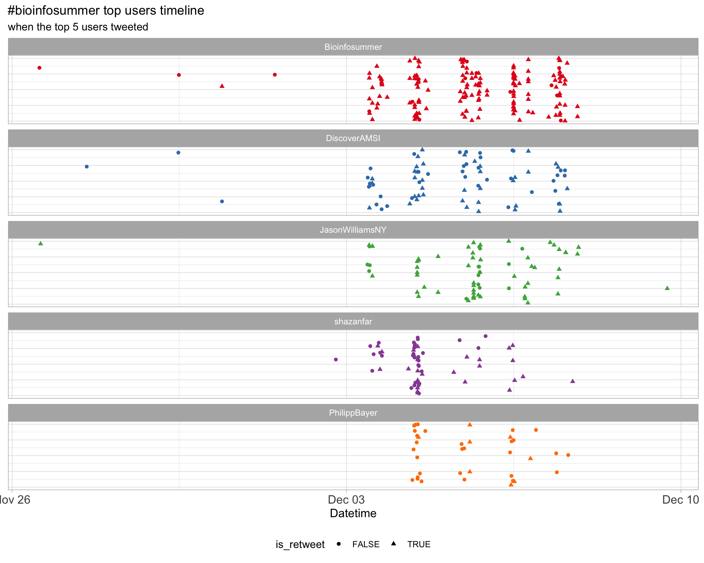
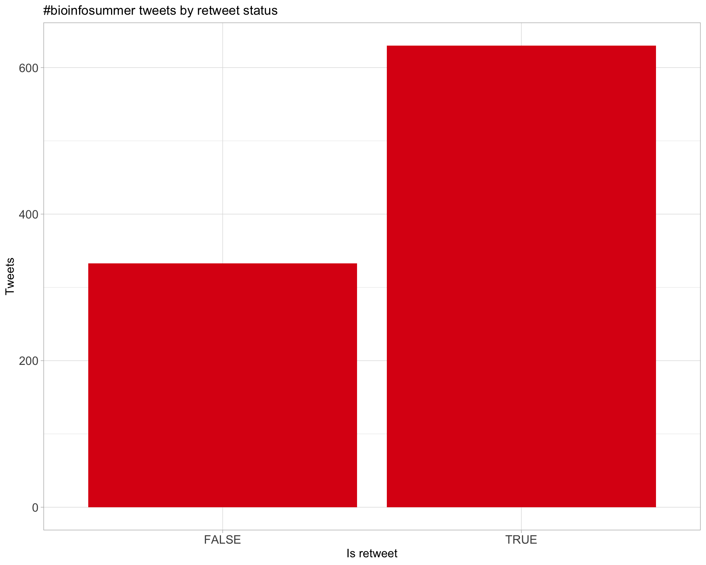
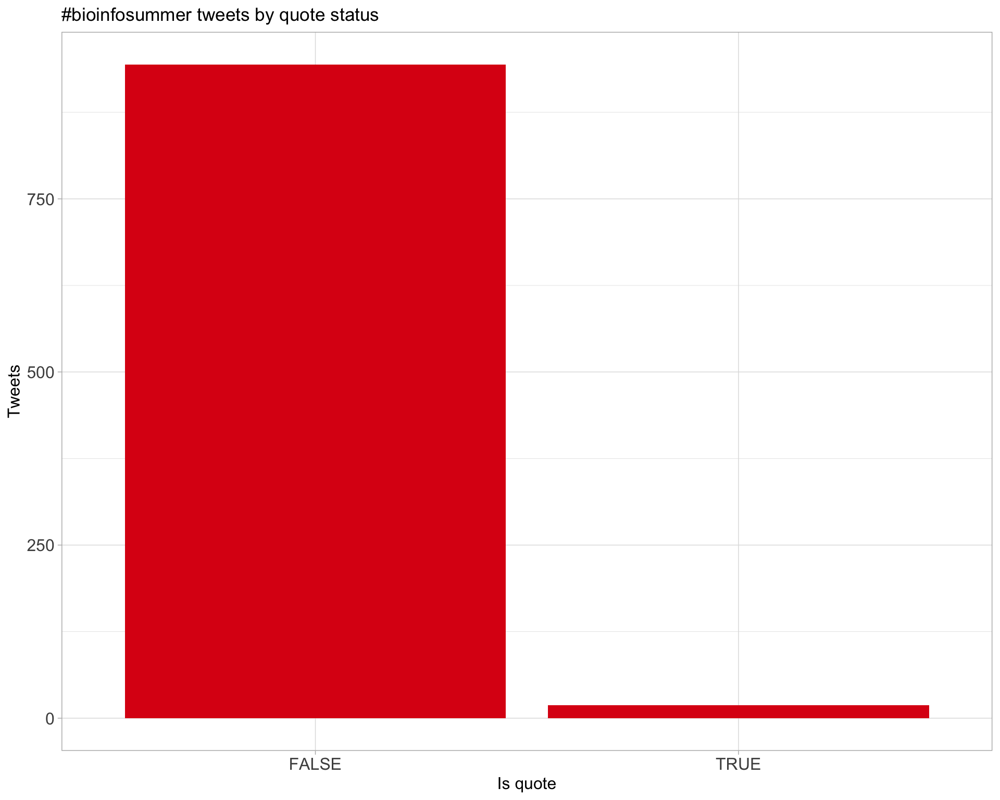
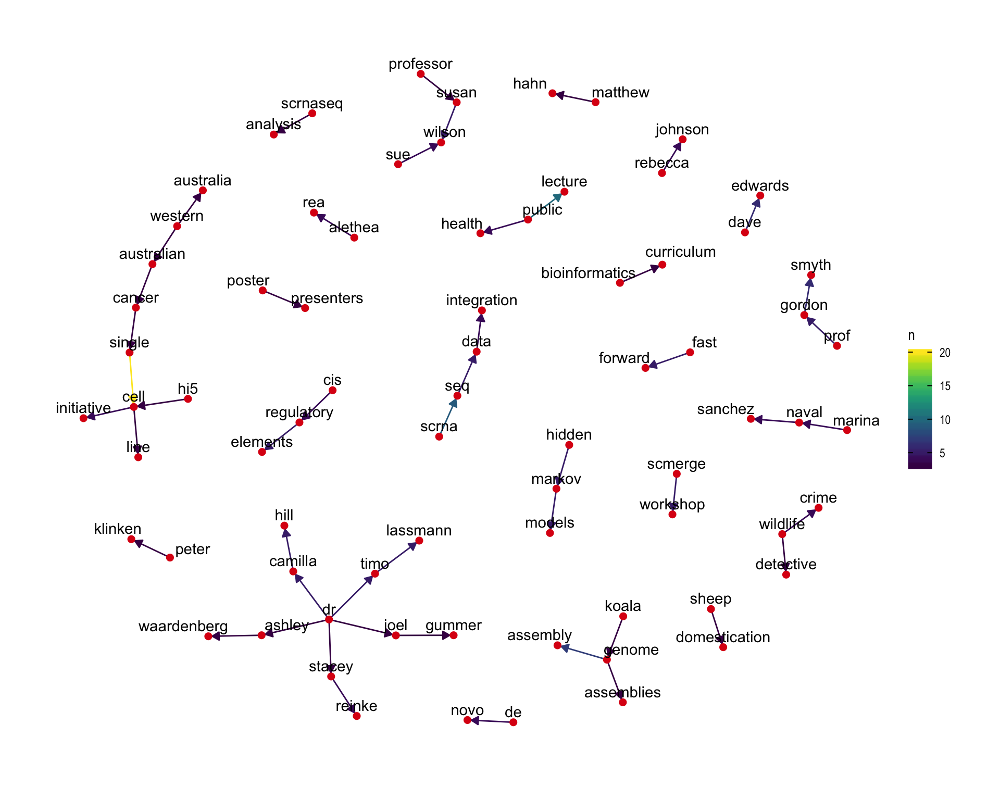

Twitter coverage of the AMSI BioInfoSummer 2018 symposium in bioinformatics
Rick Tankard, modified from script by Luke Zappia
2018-12-06 09:36:13
Parameters
| Parameter | Value |
|---|---|
| Hashtag | #bioinfosummer |
| Conference | Bioinfosummer 2018 |
| Time Zone | Australia/Perth |
| Days | c(“2018-12-03”, “2018-12-04”, “2018-12-05”, “2018-12-06”, “2018-12-07”) |
| Accent colour | #dd0c15 |
| Pallete | Set1 |
| k-core | 2 |
| Topics k | 6 |
| Bigram filter | 3 |
| Fixed | TRUE |
1 Introduction
An analysis of tweets from the Bioinfosummer 2018 conference. A total of 593 tweets from 120 users were collected using the rtweet R package.
2 Timeline
2.1 Tweets by day

2.2 Tweets by day and time
Filtered for dates 2018-12-03 - 2018-12-07 in the Australia/Perth timezone.

3 Users
3.1 Top tweeters

3.2 Top original tweeters

3.3 Retweet proportion

3.4 Top tweeters by time

3.5 Top tweeters by day
3.5.1 All tweets
Day 1
Day 2

Day 3
Day 4
Day 5

3.5.2 Original tweets
Day 1

Day 2

Day 3

Day 4
Day 5

3.6 Sources

4 Networks
4.1 Replies
The “replies network”, composed from users who reply directly to one another, coloured by page rank.

4.2 Mentions
The “mentions network”, where users mention other users in their tweets. Filtered for a k-core of 2. Node colour and size adjusted according to PageRank score.

5 Retweets
5.1 Retweet proportion

5.2 Retweet count

5.3 Top retweets
| screen_name | text | retweet_count |
|---|---|---|
| shazanfar | Slides from my talk at #Bioinfosummer are now available online: https://t.co/kJqaAK6eNU Keep an eye out for Thursday‚Äôs scMerge workshop materials! Really appreciate the invitation from organisers of @Bioinfosummer so glad to be involved üòäüòä | 12 |
| rladiesperth |
Want to continue your journey with R after #BioInfoSummer 2018? An #RLadies chapter is launching in Perth on Mon 10th Dec @PerkinsComms from 4:30pm. To celebrate we are hosting talks by local R-ladies and networking üßÄü•Ç Register (RSVP Thurs 7th Dec): https://t.co/Vcl4mwwVm2 https://t.co/Cnnh4hymRc |
12 |
| stephaniehicks | #BioInfoSummer workshop material on analysis of #scRNAseq data is at https://t.co/QzWaGbiGyF (kindly borrowed w/ permission from wonderful #scRNAseq course @m_hemberg @wikiselev @talandrews @Jenni_Westoby @davisjmcc @marenbuettner here https://t.co/b6VVpt5eX3, shortened for time) | 9 |
| shaniAmare | This gets more interesting… and is making me hungry… Under the topic of #phylogenomics @torstenseemann @ #BioInfoSummer https://t.co/vpYcVTaXRe | 9 |
| shazanfar | #Bioinfosummer @JasonWilliamsNY gives a reality check. Learning doesn’t happen AT the workshop, it happens AFTER the workshop. That’s why ensuring resources are available continuously as well as people + networks (e.g. #rladies @RLadiesSydney @combine_au @abacbs ) | 7 |
| PhilippBayer | .@Al__Forrest is recruiting postdocs to work on single cell analysis of tumors so contact him! #BioInfoSummer https://t.co/tXzvLbbhPT | 7 |
| PhilippBayer | Students have more to learn than their teachers had to! #BioInfoSummer https://t.co/ELpHvOYdp3 | 7 |
| shazanfar | #Bioinfosummer @Luyi_T presented a great Fast Forward on benchmarking for scRNA-Seq data! https://t.co/zEsqIMjsWP | 6 |
| Bioinfosummer | Come prepared! Check the details for each @DiscoverAMSI #BioInfoSummer workshop to see if you need to bring a laptop with you and/or pre-download software. https://t.co/4ra7rh60pb | 6 |
| dilys_lam | .@laura_boykin on portable sequencing to diagnose unhealthy Cassava for farmers in East Africa - delivering results to farmers in real time (Tree Lab). 800 million people in the world are dependent on Cassava for daily calories -very inspiring story!! #BioInfoSummer https://t.co/a0FY8P2NNL | 6 |
6 Favourites
6.1 Favourite proportion

6.2 Favourite count

6.3 Top favourites
| screen_name | text | favorite_count |
|---|---|---|
| torstenseemann | Now preparing for my #Bioinfosummer introductory workshop to genome assembly and annotation. Don‚Äôt forget to bring your meat computer ü߆ and a writing instrument üñäÔ∏è. https://t.co/Scp3MTnw7b | 54 |
| shazanfar | Treated to a stunning peacock display at @uwanews ahead of today‚Äôs single cell session at #bioinfosummer üòç @Bioinfosummer https://t.co/N2OB4zDfjh | 25 |
| shazanfar | Slides from my talk at #Bioinfosummer are now available online: https://t.co/kJqaAK6eNU Keep an eye out for Thursday‚Äôs scMerge workshop materials! Really appreciate the invitation from organisers of @Bioinfosummer so glad to be involved üòäüòä | 24 |
| shazanfar | In beautiful Perth ahead of #BioInfoSummer this week üòä‚úå https://t.co/hIYpCqY6mx | 24 |
| torstenseemann | Grateful to be greeted in Perth for #BioInfoSummer by @PhilippBayer, @JasonWilliamsNY, Dave Edwards with food, beer and upgraded toiletries! https://t.co/xMSUasBMf0 | 24 |
| stephaniehicks | #BioInfoSummer workshop material on analysis of #scRNAseq data is at https://t.co/QzWaGbiGyF (kindly borrowed w/ permission from wonderful #scRNAseq course @m_hemberg @wikiselev @talandrews @Jenni_Westoby @davisjmcc @marenbuettner here https://t.co/b6VVpt5eX3, shortened for time) | 21 |
| PhilippBayer | Students have more to learn than their teachers had to! #BioInfoSummer https://t.co/ELpHvOYdp3 | 21 |
| shaniAmare | This gets more interesting… and is making me hungry… Under the topic of #phylogenomics @torstenseemann @ #BioInfoSummer https://t.co/vpYcVTaXRe | 20 |
| markagray | The #Bioinfosummer students are pretty sharp! We finished the Nimbus training early and now @MarcoDeLa83 is taking about Docker containers for easy research containers. https://t.co/mQth6DS7tF | 20 |
| stephaniehicks | .@trashystats talking about her path into bioinformatics over lunch #BioInfoSummer https://t.co/47obRGcg9o | 19 |
7 Quotes
7.1 Quote proportion

7.2 Quote count
7.3 Top quotes
| screen_name | text | quote_count |
|---|---|---|
| shazanfar | It’s a pleasure to highlight and present work by our fantastic @sydneybioinfo group at #Bioinfosummer @LinYingxin @KevinWang009 Taiyun KIm @TheEllisPatrick @PengyiYang82 https://t.co/8yianCIBTM | 2 |
| sydneybioinfo | Excellent thread showing the software and papers/preprints presented by @shazanfar about Single Cell research at #Bioinfosummer https://t.co/hBeDM9dOhd | 2 |
8 Media
8.1 Media count

8.2 Top media
| screen_name | text | favorite_count |
|---|---|---|
| torstenseemann | Now preparing for my #Bioinfosummer introductory workshop to genome assembly and annotation. Don‚Äôt forget to bring your meat computer ü߆ and a writing instrument üñäÔ∏è. https://t.co/Scp3MTnw7b | 54 |
| shazanfar | Treated to a stunning peacock display at @uwanews ahead of today‚Äôs single cell session at #bioinfosummer üòç @Bioinfosummer https://t.co/N2OB4zDfjh | 25 |
| shazanfar | In beautiful Perth ahead of #BioInfoSummer this week üòä‚úå https://t.co/hIYpCqY6mx | 24 |
| torstenseemann | Grateful to be greeted in Perth for #BioInfoSummer by @PhilippBayer, @JasonWilliamsNY, Dave Edwards with food, beer and upgraded toiletries! https://t.co/xMSUasBMf0 | 24 |
| PhilippBayer | Students have more to learn than their teachers had to! #BioInfoSummer https://t.co/ELpHvOYdp3 | 21 |
| shaniAmare | This gets more interesting… and is making me hungry… Under the topic of #phylogenomics @torstenseemann @ #BioInfoSummer https://t.co/vpYcVTaXRe | 20 |
| markagray | The #Bioinfosummer students are pretty sharp! We finished the Nimbus training early and now @MarcoDeLa83 is taking about Docker containers for easy research containers. https://t.co/mQth6DS7tF | 20 |
| stephaniehicks | .@trashystats talking about her path into bioinformatics over lunch #BioInfoSummer https://t.co/47obRGcg9o | 19 |
| PhilippBayer | And now it’s @torstenseemann on how bioinformatics and open data is transforming public health! #Bioinfosummer https://t.co/DqfilZk6mv | 19 |
| rladiesperth |
Want to continue your journey with R after #BioInfoSummer 2018? An #RLadies chapter is launching in Perth on Mon 10th Dec @PerkinsComms from 4:30pm. To celebrate we are hosting talks by local R-ladies and networking üßÄü•Ç Register (RSVP Thurs 7th Dec): https://t.co/Vcl4mwwVm2 https://t.co/Cnnh4hymRc |
18 |
8.2.1 Most liked media image

9 Tweet text
9.1 Word cloud
The top 100 words used 3 or more times.

9.2 Bigram graph
Words that were tweeted next to each other at least 3 times.

9.3 Topic modelling
Top 10 words associated with 6 topics identified by LDA.

9.3.1 Representative tweets
Most representative tweets for each topic
Topic 1
| topic | screen_name | text | gamma |
|---|---|---|---|
| 1 | shazanfar | #BioInfoSummer @Al__Forrest describing ways to tackle understanding of cell-cell communication networks, using expression of ligand and receptor genes in single cells and cell types. Is there a high quality database of ligand-receptor gene networks? | 0.9941318 |
| 1 | shazanfar | #BioInfoSummer @Al__Forrest describing reframing Q of annotation of cell types. Instead of unsupervised learning (clustering) followed by labelling, start with reference profiles & perform supervised learning (classification) of cells into types. scMatch: https://t.co/dQB424Fcma | 0.9938405 |
| 1 | ErikaDuan | Prof Alistair Forrest begins day 2 of #BioInfoSummer introducing the WA cancer scRNAseq consortium. Lots of work and consideration for using reference expression profiles to annotate single cell clusters. https://t.co/VT2tBw5uo5 | 0.9938405 |
| 1 | LinYingxin | Shila @shazanfar is presenting in #BioInfoSummer about single-cell works in @sydneybioinfo including 1. Similarity metrics 2. single cell DCARS 3.single cell stably expressed genes (SEGs) 4. scMerge üíÉüèª https://t.co/saoEs12AJC | 0.9927630 |
| 1 | DiscoverAMSI | First #BioInfoSummer lecture of the day starting soon! Are you ready to learn about the Western Australian Cancer Single-Cell Initiative with @Al__Forrest, Head of the @PerkinsComms Systems Biology and Genomics Lab? | 0.9927630 |
| 1 | ErikaDuan | Sad to miss #ASI2018WA but so excited to be attending #BioInfoSummer @Bioinfosummer. A poor understanding of statistics, especially in biology, is a contributor to poor science reproducibility. https://t.co/viauNeCM6k | 0.9912285 |
| 1 | shazanfar |
Nice FF talk by @LCrowhurstIMB (working with @drjosephpowell ) describing scIVA for single cell interactive visualisation and analysis #Bioinfosummer |
0.9905615 |
| 1 | monica_kehoe | @Al__Forrest first up this morning for #BioinfoSummer with discussion of single cell genomics and the Western Australian Cancer Single Cell Initiative @PerkinsComms @DiscoverAMSI @Bioinfosummer https://t.co/1ZZauGBBaE | 0.9905615 |
| 1 | Vivian_Zh666 | Day2. Too many methods and techniques to learn to catch up with the rapid developing single cell world. Great workshops which I wish I could go both! @Bioinfosummer #Bioinfosummer https://t.co/7ttjj8lUgj | 0.9897845 |
| 1 | shazanfar | Fast Forward presentations happening at #BioInfoSummer now, with an excellent start by @ErikaDuan studying immune cells on both RNA and protein front | 0.9897845 |
Topic 2
| topic | screen_name | text | gamma |
|---|---|---|---|
| 2 | shazanfar | Prof Inge Koch hosting the @DiscoverAMSI CHOOSEMATHS Lunch at #BioInfoSummer programs include encouraging yr 9-10 high school students to take senior high school maths. Aus-wide stats show underrepresentation exists at the high school level and poor attitudes even earlier (yr 5) https://t.co/P59CP6y6wL | 0.9954287 |
| 2 | dilys_lam | .@laura_boykin on portable sequencing to diagnose unhealthy Cassava for farmers in East Africa - delivering results to farmers in real time (Tree Lab). 800 million people in the world are dependent on Cassava for daily calories -very inspiring story!! #BioInfoSummer https://t.co/a0FY8P2NNL | 0.9950651 |
| 2 | ErikaDuan | Prof Rebecca Johnson from the Australian Museum gives a fascinating talk about an accidental career in wildlife forensics. Wildlife crime has a huge cost across the world and smuggling has especially detrimental impact on island nations (pests introduction etc). #BioInfoSummer https://t.co/B0J8kA1WYq | 0.9948608 |
| 2 | dilys_lam | @stephaniehicks introducing Bioconductor Workflows, which provide workflows on analysing different types of data, including scRNA-seq (over 58 packages exist!). There are also ExperimentData packages with data you can play/learn with - super useful!! #BioInfoSummer | 0.9935189 |
| 2 | ErikaDuan | Next, As. Prof Stephanie Hicks takes us through the scRNAseq workflow via Bioconductor. Currently over 58 packages available for scRNAseq analysis. ScRNAseq analysis has additional noise parameters that need to be considered. #BioInfoSummer https://t.co/RJAONRqUPF | 0.9927630 |
| 2 | monica_kehoe | @laura_boykin fresh off the plane from East Africa sharing her experiences from #poresafari and #treelab with everyone @Bioinfosummer @DiscoverAMSI #BioInfoSummer @nanopore @ScienceUWA watch this space for exciting things to come and see https://t.co/9tusvgC2oP for more info https://t.co/4r1bidM1F6 | 0.9923149 |
| 2 | ErikaDuan | Prof Dave Edwards has a great analogy for genome sequencing challenges. How good the alignment is, whether SNPs can be linked to phenotypes and building pangenomes are important for plant genomics. #BioinfoSummer https://t.co/L0KepDj6v0 | 0.9923149 |
| 2 | dilys_lam | Dave Edwards closing day 1 - plant genomics and bioinformatic applications - the length of the wheat genome is about 4 times around the world! #BioInfoSummer https://t.co/ltHpQjDtGY | 0.9912285 |
| 2 | RickTankard | Environmental/wildlife crime worth $100-200 billion a year worldwide. In talk by Dr Rebecca Johnson from Australian Museum #bioinfosummer https://t.co/fUiLqlLgPu | 0.9905615 |
| 2 | shaniAmare | @nanopore helping to solve real-world problems in Africa with the #cassavavirusactionproject described by Dr. Laura Boykin #BioInfoSummer https://t.co/YOFBuWN15q | 0.9888683 |
Topic 3
| topic | screen_name | text | gamma |
|---|---|---|---|
| 3 | dilys_lam | .@ZhipingWeng starting off day 3 on the sequencing, assembly and annotation of the Hi5 cell line from Trichoplusia ni (the cabbage looper!), which is a great in vitro system to study small RNAs such as piRNAs. piggyBac transposons were originally found in Hi5! #BioInfoSummer https://t.co/vKKgpOWB2F | 0.9948608 |
| 3 | JasonWilliamsNY | Super excited to listen to @DrRebeccaJ - the first woman director of research in the @austmus ‘s 191 year history. She is a true Superstar and a Superstar woman in STEM. Tonight she is sharing her science and her inspiring journey. #BioInfoSummer - look her up, follow her! https://t.co/kqG2NTeJY8 | 0.9938405 |
| 3 | Bioinfosummer | FREE @DiscoverAMSI #BioInfoSummer 2018 public lecture by @austmus Director Rebecca Johnson. Accessible to year 12 students and above. Register at https://t.co/AqIrCqioVT @MAWAinc @ScitechWA @ScienceUWA @UWAresearch @ECU @MurdochUni @CurtinUni @DrRebeccaJ https://t.co/H3t1UGe6hv | 0.9935189 |
| 3 | dilys_lam | .@torstenseemann (ft. simpsons) on using WGS and bioinformatics in transforming public health and clinical microbiology - using both de novo assembly and aligning to references - also pangenomes (core + accessory DNA) #BioInfoSummer https://t.co/mf4r9aJwtv | 0.9935189 |
| 3 | stephaniehicks | #BioInfoSummer workshop material on analysis of #scRNAseq data is at https://t.co/QzWaGbiGyF (kindly borrowed w/ permission from wonderful #scRNAseq course @m_hemberg @wikiselev @talandrews @Jenni_Westoby @davisjmcc @marenbuettner here https://t.co/b6VVpt5eX3, shortened for time) | 0.9931618 |
| 3 | monica_kehoe | @JasonWilliamsNY improving the bioinformatics curriculum,including prac projects in undergraduate courses would be ideal- I couldn’t agree more, my third year practical project in my degree shaped my path in science for sure! @Bioinfosummer @DiscoverAMSI #Bioinfosummer https://t.co/IQToPJBPri | 0.9931618 |
| 3 | monica_kehoe | I always enjoy talks by @torstenseemann - doesn’t disappoint today, great discussion about bacteria, wgs, genomics and bioinformatics for public health. I can only hope the plant pathogens can follow suit ASAP! #BioInfoSummer @Bioinfosummer @DiscoverAMSI https://t.co/DQE06UFroi | 0.9931618 |
| 3 | stephaniehicks | Lovely walk by the water üèñ & now ready for #BioInfoSummer Day 2 on #singlecell #omics üë©üèæ‚Äçüíªüë®ü誂Äçüíªüë©‚Äçüíªüë®ü躂Äçüíªüë®üèø‚Äçüíªüë©ü誂Äçüíªto kickoff @uwanews (even the peacocks ü¶ö seem to be ready!) #Bioinformatics #scRNAseq #statistics #mathematics #STEM https://t.co/aRBcNptw3d | 0.9927630 |
| 3 | CraigDuncanAU | Another @Bioinfosummer highlight: @torstenseemann explaining computer science, public health and de novo genome assembly with some scrambled quotes from #shakespeare and #starwars. #bioinfosummer | 0.9912285 |
| 3 | ErikaDuan | As Prof @torstenseemann uses the most excellent analogies to explain the difficulties of de novo genome assembly at the #BioInfoSummer day 3 afternoon vworkshop. https://t.co/l9s1I61Yp1 | 0.9905615 |
Topic 4
| topic | screen_name | text | gamma |
|---|---|---|---|
| 4 | JasonWilliamsNY | Professor Wilson’s slides are so relevant to the #BioInfoSummer audience! If my slides weren’t already written I could have used these! I suspect all the speakers will be converging on these key themes that represent our best approach to sound scientific practice. https://t.co/woIViKvl69 | 0.9935189 |
| 4 | shazanfar | Enjoying the morning session of #BioInfoSummer with Sue Wilson presenting the Opening Lecture. Questions touching on keeping track of methods (e.g.¬†software versions) to ensure reproducibility. The person you collaborate with the most is future you üòÖ | 0.9935189 |
| 4 | DiscoverAMSI | We met them this morning at #BioInfoSummer, now let’s join them for parallel workshop sessions: Building a Registry of Candidate cis-Regulatory Elements for Human and Mouse with @ZhipingWeng and Introduction to Genome Assembly and Annotation with @torstenseemann. See you at 1:30! | 0.9935189 |
| 4 | DiscoverAMSI | Another great day of presentations at AMSI #BioInfoSummer 2018 topped off with an educational afternoon of workshops by two of our international speakers @JasonWilliamsNY and @stephaniehicks. Enjoy a sundowner tonight. See you at 9am tomorrow for @Bioinfosummer Day 3 https://t.co/BL80a3Skny | 0.9923149 |
| 4 | JasonWilliamsNY | Great intro to #BioInfoSummer by Peter Klinken, Chief Scientist of Western Australia. “The education sector is the most resistant to change” - will definitely be amplifying these themes in my talk tomorrow! https://t.co/wQTli8iFwE | 0.9923149 |
| 4 | shaniAmare | Conference opening by Peter Klinken AC, Chief Scientist of Western Australia, with the statement “think outside the box… not just as a bioinformatician but a think how your capabilities are applicable in a wide veriety of different areas” #BioInfoSummer 2018 https://t.co/YBBunOI4Os | 0.9923149 |
| 4 | JasonWilliamsNY | In the #BioInfoSummer opening lecture by Professor Susan Wilson, University of NSW puts a fine point of the difference between reproducibility and replicability - we want to be able to replicate findings and often a better understanding of statistics is what’s needed! https://t.co/yt3AbIpSVZ | 0.9923149 |
| 4 | DiscoverAMSI | Welcome to Wednesday at #BioInfoSummer in sunny Perth! First up for today is Professor @ZhipingWeng from @UMassMedical on the genome of cabbage looper Hi5 germ cells https://t.co/qQEwoi7kXq | 0.9905615 |
| 4 | ErikaDuan | I’m picking up on new databases to try for genes/genomic features at Marina Sanchez’s talk on wild vs domestic sheep genomes. #BioInfoSummer https://t.co/qGYzCdDrOz | 0.9905615 |
| 4 | JasonWilliamsNY | The Nature Genetics cover of the Koala Genome was commissioned to an Aboriginal artist. “It’s not an accident it looks like a target” #BioInfoSummer https://t.co/orSewaTpvg | 0.9897845 |
Topic 5
| topic | screen_name | text | gamma |
|---|---|---|---|
| 5 | DiscoverAMSI | Meet AMSI #BioInfoSummer 2018 speaker Marina Naval Sanchez from @CSIROnews! Join Marina to learn about molecular processes driving the evolutionary changes produced by sheep domestication and artificial selection https://t.co/I0SwiH4Rlz @UWAresearch @VetLifeScience @ECUresearch https://t.co/ZH3S4sXRzd | 0.9948608 |
| 5 | dilys_lam | @shazanfar introducing scMerge, which allows integration of multiple datasets - scMerge battles strong batch effects between datasets by estimating unwanted variation using negative controls and replicates. Featuring a surprise appearance by Drake #BioInfoSummer https://t.co/iRVQnnZnr9 | 0.9943967 |
| 5 | shaniAmare | The UK‚Äôs got the black üêë‚Ķ ü§≠üòÖ Dr.¬†Marina Naval Sanchez from #CSIRO explains how functional annotation reveals proximal regulatory elements contributed to the evolution of modern sheep breeds #BioInfoSummer https://t.co/Jl45XDkdaq | 0.9938405 |
| 5 | rladiesperth |
Don‚Äôt forget to register for our #RLadies Perth launch event. Registrations close tomorrow night. We are looking forward to meeting you all! üéâüéâ #BioInfoSummer @ECUresearch @MurdochUni @CurtinIC @CurtinUni @UWAresearch @BiolSci_UWA @telethonkids @PerkinsComms https://t.co/aGh41pqjQ4 |
0.9938405 |
| 5 | DiscoverAMSI | In the mood for a catered lunch? If you’re a #BioInfoSummer attendee, join us on the Arts Building Lawns now! Female attendees can also head to the Arts Building Seminar Room for a #CHOOSEMATHS lunch event @UWAresearch | 0.9931618 |
| 5 | shazanfar | #BioInfoSummer @stephaniehicks excellent framing of the issues of batch effects in scRNA-Seq data, I’m so glad the audience is primed to hear about more scRNA-Seq and scMerge after morning tea! https://t.co/ykSvb5w4UR | 0.9931618 |
| 5 | DiscoverAMSI | Have you registered yet for the free AMSI #BioInfoSummer 2018 Public Lecture? Wed 5 Dec at 6pm @UWABusSchool! https://t.co/pJuzWAO2YU @Bioinfosummer @ausbionet @VetLifeScience @UWAresearch @CurtinUni @ECUresearch @auscicomm https://t.co/EmJxCHunJt | 0.9927630 |
| 5 | stephaniehicks | Attending #BioInfoSummer in Perth, Australia this week! Already fell in love with the beautiful weather, beaches, and ping pong tables on the @uwanews campus üòª https://t.co/7saESF2HU9 | 0.9918076 |
| 5 | shazanfar | As someone who didn’t receive any undergraduate bioinformatics training, I feel it’s so important to think about the need for building bioinformatics into curriculum @JasonWilliamsNY events like #Bioinfosummer bridge this gap by bringing many resources together | 0.9905615 |
| 5 | stephaniehicks | @RLadiesMelb Oops forgot to mention that ü§¶‚Äç‚ôÄÔ∏è Heading to the University of Melbourne for #BiocAsia https://t.co/H7scMrkkLH and the Perth next week for #BioInfoSummer https://t.co/6aVHkJntLX | 0.9897845 |
| 5 | PhilippBayer | Dr. Marina Naval-Sanchez on using WGS to learn more about sheep domestication - 69 individuals, 28 million SNPs #BioInfoSummer https://t.co/3ciLQ3euFl | 0.9897845 |
| 5 | monica_kehoe | @JamesKHane sharing some plant pathology applications of genomics and bioinformatics including mention of @darcyabjones work on “stago” @theCCDM @DiscoverAMSI @Bioinfosummer #BioInfoSummer https://t.co/OlPylXBYHx | 0.9897845 |
Topic 6
| topic | screen_name | text | gamma |
|---|---|---|---|
| 6 | rladiesperth |
Want to continue your journey with R after #BioInfoSummer 2018? An #RLadies chapter is launching in Perth on Mon 10th Dec @PerkinsComms from 4:30pm. To celebrate we are hosting talks by local R-ladies and networking üßÄü•Ç Register (RSVP Thurs 7th Dec): https://t.co/Vcl4mwwVm2 https://t.co/Cnnh4hymRc |
0.9948608 |
| 6 | shazanfar | Prof Dave Edwards giving an excellent talk on building pan genomes in crop plants. A number of morphotypically different plants have very similar/same genomes! Diverse genes tend to be bacterial defence-related #BioInfoSummer https://t.co/YBThd6fzXl | 0.9943967 |
| 6 | stephaniehicks | .@JasonWilliamsNY one of the biggest barriers is lack of faculty expertise / training and lack of student background skills / knowledge. Pretty consistent across the type of insitution too #BioInfoSummer https://t.co/LlZ0rYRUlV | 0.9923149 |
| 6 | shazanfar | #Bioinfosummer @JasonWilliamsNY gives a reality check. Learning doesn’t happen AT the workshop, it happens AFTER the workshop. That’s why ensuring resources are available continuously as well as people + networks (e.g. #rladies @RLadiesSydney @combine_au @abacbs ) | 0.9918076 |
| 6 | stephaniehicks | Beyond excited to hear @DrRebeccaJ, the first female director of @austmus in 191 years, talk about being a wildlife detective investigating wildlife crime & forensics #BioInfoSummer #WomenInSTEM https://t.co/r8ZDd6okVW | 0.9912285 |
| 6 | JasonWilliamsNY | Wildlife crime is a multi-billion dollar problem each year… additionally it is usually cross-country. Thus the need for high-quality forensics. It’s often associated with organized crime. #Bioinfosummer https://t.co/yoVvH8UyUB | 0.9912285 |
| 6 | markagray | The #Bioinfosummer students are pretty sharp! We finished the Nimbus training early and now @MarcoDeLa83 is taking about Docker containers for easy research containers. https://t.co/mQth6DS7tF | 0.9905615 |
| 6 | shazanfar | Slides from my talk at #Bioinfosummer are now available online: https://t.co/kJqaAK6eNU Keep an eye out for Thursday‚Äôs scMerge workshop materials! Really appreciate the invitation from organisers of @Bioinfosummer so glad to be involved üòäüòä | 0.9905615 |
| 6 | shazanfar |
Workshop materials for Thursday’s scMerge session are now online, see you tomorrow! Tutorial: https://t.co/OYfadMEWH4 Post with links: https://t.co/kJqaAK6eNU #bioinfosummer https://t.co/YK2k58RJFS |
0.9905615 |
| 6 | shaniAmare | @JasonWilliamsNY explains that the lack of BETTER training to be the biggest obstacle in being an expert in bioinformatics.. how to solve it? Probably start with making resources more available… #BioInfoSummer https://t.co/K49U2IuuCb | 0.9888683 |
| 6 | monica_kehoe | @JasonWilliamsNY leading us in the use of Kallisto and Sleuth for this afternoons workshop. Also a cool way to show you’re good, or need help, red and green post-its @Bioinfosummer #BioInfoSummer @DiscoverAMSI https://t.co/qTirUnTV89 | 0.9888683 |
| 6 | Bioinfosummer | Break time. Show your AMSI #bioinfosummer 2018 lanyard at these local cafes to get great deals. Be back at 1.30pm for the afternoon workshops https://t.co/uaLHMpRG8y | 0.9888683 |
10 Software
Software mentioned in Tweets with links to GitHub, BitBucket, Bioconductor or CRAN.
| Name | Type | Link |
|---|---|---|
| bio-workshop-18 | GitHub | https://github.com/pawseysc/bio-workshop-18 |
| bioinfosummer | GitHub | https://github.com/simonvh/bioinfosummer |
| scIVA | GitHub | https://github.com/imb-computational-genomics-lab/sciva |
| scmatch | GitHub | https://github.com/forrest-lab/scmatch |
| scMatch | GitHub | https://github.com/asrhou/scmatch |
Session info
## ─ Session info ──────────────────────────────────────────────────────────
## setting value
## version R version 3.5.1 (2018-07-02)
## os macOS High Sierra 10.13.6
## system x86_64, darwin15.6.0
## ui X11
## language (EN)
## collate en_AU.UTF-8
## ctype en_AU.UTF-8
## tz Australia/Perth
## date 2018-12-06
##
## ─ Packages ──────────────────────────────────────────────────────────────
## package * version date lib source
## assertthat 0.2.0 2017-04-11 [1] CRAN (R 3.5.0)
## backports 1.1.2 2017-12-13 [1] CRAN (R 3.5.0)
## base64enc 0.1-3 2015-07-28 [1] CRAN (R 3.5.0)
## bindr 0.1.1 2018-03-13 [1] CRAN (R 3.5.0)
## bindrcpp * 0.2.2 2018-03-29 [1] CRAN (R 3.5.0)
## broom 0.5.0 2018-07-17 [1] CRAN (R 3.5.0)
## callr 3.0.0 2018-08-24 [1] CRAN (R 3.5.0)
## cli 1.0.1 2018-09-25 [1] CRAN (R 3.5.0)
## colorspace 1.3-2 2016-12-14 [1] CRAN (R 3.5.0)
## crayon 1.3.4 2017-09-16 [1] CRAN (R 3.5.0)
## desc 1.2.0 2018-05-01 [1] CRAN (R 3.5.0)
## devtools 2.0.1 2018-10-26 [1] CRAN (R 3.5.1)
## digest 0.6.18 2018-10-10 [1] CRAN (R 3.5.0)
## dplyr * 0.7.8 2018-11-10 [1] CRAN (R 3.5.0)
## evaluate 0.12 2018-10-09 [1] CRAN (R 3.5.0)
## fansi 0.4.0 2018-10-05 [1] CRAN (R 3.5.0)
## farver 1.1.0 2018-11-20 [1] CRAN (R 3.5.0)
## forcats * 0.3.0 2018-02-19 [1] CRAN (R 3.5.0)
## fs 1.2.6 2018-08-23 [1] CRAN (R 3.5.0)
## ggforce 0.1.3 2018-07-07 [1] CRAN (R 3.5.0)
## ggplot2 * 3.1.0 2018-10-25 [1] CRAN (R 3.5.0)
## ggraph * 1.0.2 2018-07-07 [1] CRAN (R 3.5.0)
## ggrepel * 0.8.0 2018-05-09 [1] CRAN (R 3.5.0)
## glue 1.3.0 2018-07-17 [1] CRAN (R 3.5.0)
## gridExtra 2.3 2017-09-09 [1] CRAN (R 3.5.0)
## gtable 0.2.0 2016-02-26 [1] CRAN (R 3.5.0)
## here * 0.1 2017-05-28 [1] CRAN (R 3.5.0)
## highr 0.7 2018-06-09 [1] CRAN (R 3.5.0)
## htmltools 0.3.6 2017-04-28 [1] CRAN (R 3.5.0)
## httr 1.3.1 2017-08-20 [1] CRAN (R 3.5.0)
## igraph * 1.2.2 2018-07-27 [1] CRAN (R 3.5.0)
## janeaustenr 0.1.5 2017-06-10 [1] CRAN (R 3.5.0)
## jsonlite 1.5 2017-06-01 [1] CRAN (R 3.5.0)
## knitr * 1.20 2018-02-20 [1] CRAN (R 3.5.0)
## labeling 0.3 2014-08-23 [1] CRAN (R 3.5.0)
## lattice 0.20-38 2018-11-04 [1] CRAN (R 3.5.1)
## lazyeval 0.2.1 2017-10-29 [1] CRAN (R 3.5.0)
## lubridate * 1.7.4 2018-04-11 [1] CRAN (R 3.5.0)
## magrittr 1.5 2014-11-22 [1] CRAN (R 3.5.0)
## MASS 7.3-51.1 2018-11-01 [1] CRAN (R 3.5.0)
## Matrix 1.2-15 2018-11-01 [1] CRAN (R 3.5.0)
## memoise 1.1.0 2017-04-21 [1] CRAN (R 3.5.0)
## modeltools 0.2-22 2018-07-16 [1] CRAN (R 3.5.0)
## munsell 0.5.0 2018-06-12 [1] CRAN (R 3.5.0)
## nlme 3.1-137 2018-04-07 [1] CRAN (R 3.5.1)
## NLP 0.2-0 2018-10-18 [1] CRAN (R 3.5.0)
## pillar 1.3.0 2018-07-14 [1] CRAN (R 3.5.0)
## pkgbuild 1.0.2 2018-10-16 [1] CRAN (R 3.5.0)
## pkgconfig 2.0.2 2018-08-16 [1] CRAN (R 3.5.0)
## pkgload 1.0.2 2018-10-29 [1] CRAN (R 3.5.0)
## plyr 1.8.4 2016-06-08 [1] CRAN (R 3.5.0)
## prettyunits 1.0.2 2015-07-13 [1] CRAN (R 3.5.0)
## processx 3.2.0 2018-08-16 [1] CRAN (R 3.5.0)
## ps 1.2.1 2018-11-06 [1] CRAN (R 3.5.0)
## purrr * 0.2.5 2018-05-29 [1] CRAN (R 3.5.0)
## R6 2.3.0 2018-10-04 [1] CRAN (R 3.5.0)
## RColorBrewer * 1.1-2 2014-12-07 [1] CRAN (R 3.5.0)
## Rcpp 1.0.0 2018-11-07 [1] CRAN (R 3.5.0)
## remotes 2.0.2 2018-10-30 [1] CRAN (R 3.5.0)
## reshape2 1.4.3 2017-12-11 [1] CRAN (R 3.5.0)
## rlang 0.3.0.1 2018-10-25 [1] CRAN (R 3.5.0)
## rmarkdown 1.10 2018-06-11 [1] CRAN (R 3.5.0)
## rprojroot 1.3-2 2018-01-03 [1] CRAN (R 3.5.0)
## rtweet * 0.6.8 2018-09-28 [1] CRAN (R 3.5.0)
## scales 1.0.0 2018-08-09 [1] CRAN (R 3.5.0)
## sessioninfo 1.1.1 2018-11-05 [1] CRAN (R 3.5.0)
## slam 0.1-43 2018-04-23 [1] CRAN (R 3.5.0)
## SnowballC 0.5.1 2014-08-09 [1] CRAN (R 3.5.0)
## stringi 1.2.4 2018-07-20 [1] CRAN (R 3.5.0)
## stringr * 1.3.1 2018-05-10 [1] CRAN (R 3.5.0)
## testthat 2.0.1 2018-10-13 [1] CRAN (R 3.5.0)
## tibble 1.4.2 2018-01-22 [1] CRAN (R 3.5.0)
## tidyr * 0.8.2 2018-10-28 [1] CRAN (R 3.5.0)
## tidyselect 0.2.5 2018-10-11 [1] CRAN (R 3.5.0)
## tidytext * 0.2.0 2018-10-17 [1] CRAN (R 3.5.0)
## tm 0.7-5 2018-07-29 [1] CRAN (R 3.5.0)
## tokenizers 0.2.1 2018-03-29 [1] CRAN (R 3.5.0)
## topicmodels * 0.2-7 2017-11-03 [1] CRAN (R 3.5.0)
## tweenr 1.0.0 2018-09-27 [1] CRAN (R 3.5.0)
## units 0.6-1 2018-09-21 [1] CRAN (R 3.5.0)
## usethis 1.4.0 2018-08-14 [1] CRAN (R 3.5.0)
## utf8 1.1.4 2018-05-24 [1] CRAN (R 3.5.0)
## viridis * 0.5.1 2018-03-29 [1] CRAN (R 3.5.0)
## viridisLite * 0.3.0 2018-02-01 [1] CRAN (R 3.5.0)
## withr 2.1.2 2018-03-15 [1] CRAN (R 3.5.0)
## wordcloud * 2.6 2018-08-24 [1] CRAN (R 3.5.0)
## xml2 1.2.0 2018-01-24 [1] CRAN (R 3.5.0)
## yaml 2.2.0 2018-07-25 [1] CRAN (R 3.5.0)
##
## [1] /Library/Frameworks/R.framework/Versions/3.5/Resources/library